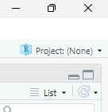
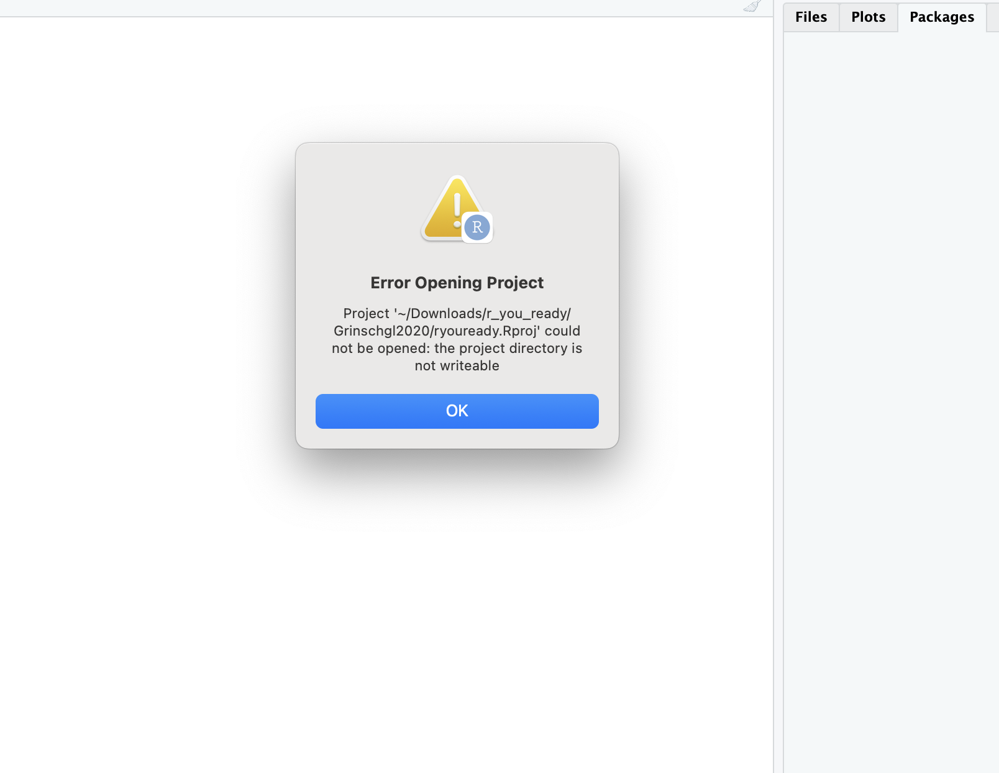
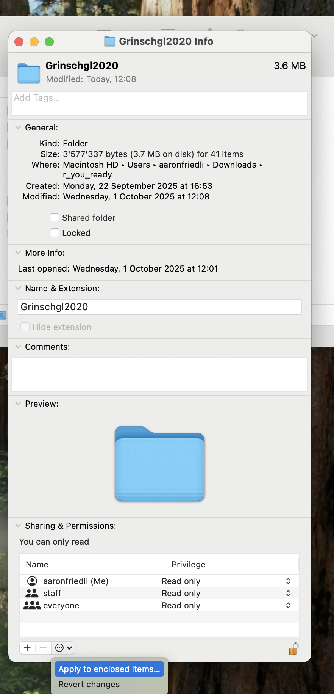
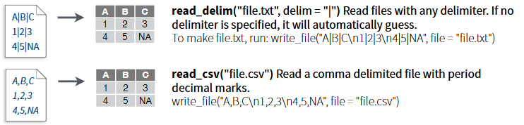
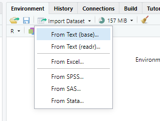
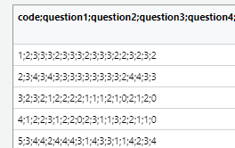
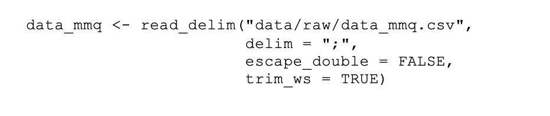
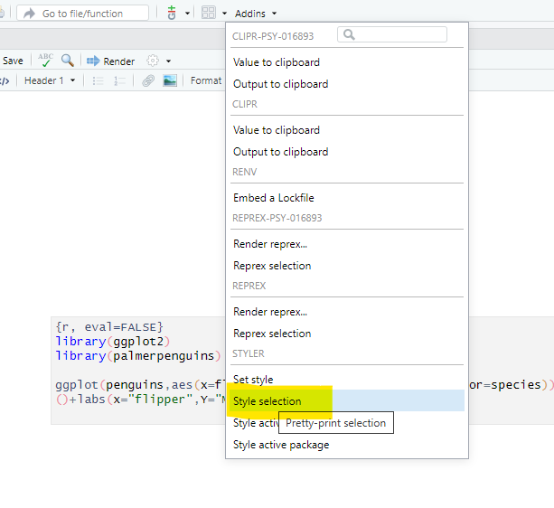

first_vector <- c(22342, 4, 5, 6, 7, 23234, 342, 342)
highest_values_1 <- sort(first_vector)[1:2]
highest_values <- sort(first_vector, decreasing = TRUE)[1:2]Hands On 2
Hands On - Laden, mergen und Syntax (Einheiten 3 und 4)
Bei Bedarf finden sich hier nochmal die Slides zu Einheit 3:
Und hier die Slides zu Einheit 4:
Lernziele dieses Hands-On-Blocks
✅Projekte kennenlernen & verstehen
✅Unterschied zwischen relativen und absoluten Pfaden verstehen
✅Datensätze in R importieren, inspizieren und speichern
✅Datensätze mit cbind() und full_join() mergen und Vor- und Nachteile reflektieren
✅Funktionen und ihre Argumente (inkl. Defaults) nutzen
✅Style Conventions umsetzen
Projekte und Pfade
Was sind R-Projekte?
👉 Kapitel 6.2 in R for Data Science
Ein R-Projekt ist eine Projektdatei mit der Endung (.Rproj), die du in RStudio anlegst oder öffnest.
Wenn du ein Projekt öffnest, passiert Folgendes automatisch:
- RStudio setzt das Working Directory (Arbeitsverzeichnis) auf den Ordner, in dem die
.Rproj-Datei liegt.
- Alle Dateien, Skripte, Daten und Ergebnisse, die du in diesem Ordner ablegst, gehören logisch zu diesem Projekt.
- Du arbeitest in einer klar definierten, geschlossenen Umgebung.
- Du kannst entweder ein neues Projekt erstellen oder ein bestehendes Projekt öffnen.
Du kannst dir ein Projekt wie einen Container für ein Forschungsprojekt vorstellen. Alles, was zu einer Analyse gehört, liegt gebündelt an einem Ort.
Das ist besonders wichtig für:
- Seminararbeiten
- Reanalysen
- Masterarbeiten
- Kollaborative ProjekteWarum sollte man mit Projekten arbeiten?
Viele typische Probleme in R entstehen dadurch, dass kein Projekt verwendet wird:
- Das Working Directory ist falsch gesetzt.
- Skripte funktionieren nur auf dem eigenen Laptop.
- Dateien werden an unterschiedlichen Orten gespeichert -> kein nachvollziehbares Forschungsdatenmanagement.
- Analysen sind schwer reproduzierbar.
R-Projekte verhindern genau diese Probleme.
Woran erkennst du, ob ein Projekt geöffnet ist?
Oben rechts in RStudio siehst du den Namen des aktuellen Projekts.
In diesem Screenshot ist noch kein Projekt geöffnet (Project: (None)). Wenn ein Projekt aktiv ist, wird dort der entsprechende Projektname angezeigt.

Übung:
Im ZIP-Ordner zum Abschlussprojekt, den ihr von ILIAS heruntergeladen habt (inklusive Datenanalyseplan und Codebook), haben wir für euch bereits eine .Rproj-Datei angelegt. Diese befindet sich im Ordner Grinschgl2020.
- Öffne diese Datei.
- Überprüfe oben rechts in RStudio, ob das richtige Projekt aktiv ist.
- Schliesse RStudio und öffne es erneut über die
.Rproj-Datei.
👉 Gewöhne dir an, Analysen immer über die Projektdatei zu starten.
Bei Fehlermeldungen:
„Achtung! Bei Mac-User:innen kann es zu Problemen mit den Berechtigungen kommen. Falls dir beim Öffnen diese Fehlermeldung angezeigt wird:“

Die Lösung besteht darin, die Berechtigungen für den Ordner anzupassen. Dafür gehst du auf den ‚r_you_ready‘-Ordner und öffnest das Menü mit ‚Get Info‘.

Die Berechtigungen passt du an, indem du auf das Schloss unten rechts klickst, dein Passwort eingibst und bei deinem Account ‚Read & Write‘ auswählst. Anschliessend klickst du auf die drei Punkte im Kreis und führst ‚Apply to enclosed items…‘ aus. Danach solltest du die vollen Berechtigungen haben.
Eigenes Projekt erstellen
Wenn du zukünftig ein eigenes Projekt anlegen möchtest (z.B. für deine Masterarbeit): 👉Kapitel 6.2 in R for Data Science
Absolute vs. relative Pfade
Wenn du in R eine Datei einliest, musst du angeben, wo diese Datei liegt.
Diesen “Weg” zur Datei nennt man einen Pfad.
Dabei unterscheidet man zwei Arten von Pfaden:
Absolute Pfade
Ein absoluter Pfad beschreibt den vollständigen Weg zu einer Datei, ausgehend vom Wurzelverzeichnis deines Computers.
🔴 Nachteil: Sie sind oft sehr lang und funktionieren nur auf deinem Rechner.
- Beispiel (Windows):
C:\Users\maxmustermann\Dokumente\r_you_ready\Grinschgl2020\data\raw\Beispieldatei.csv
- Beispiel (Windows):
Wenn jemand anderes dieses Skript ausführt, wird dieser Pfad nicht existieren.
Relative Pfade
Ein relativer Pfad beschreibt den Weg zu einer Datei ausgehend vom aktuellen Arbeitsverzeichnis.
Wenn du mit einem R-Projekt arbeitest, ist das Working Directory automatisch der Projektordner.
🟢 Vorteil: Sie sind kürzer, übersichtlicher und funktionieren auf jedem Rechner, solange die Projektstruktur gleich bleibt.
Beispiel:
- Projektordner = Grinschgl2020
- Datei liegt in data/raw/Beispieldatei.csv
- relativer Pfad:
data/raw/Beispieldatei.csv # relativer Pfad read_csv("data/raw/Beispieldatei.csv") # Einlesen der Datei in R
Solange die Projektstruktur gleich bleibt, funktioniert dieser Code auf jedem Computer.
Warum ist das wichtig?
In der wissenschaftlichen Praxis sollen Analysen:
- nachvollziehbar
- überprüfbar
- reproduzierbarsein.
Absolute Pfade verhindern dies; relative Pfade ermöglichen es.
Daten importieren und exportieren
Import
Bevor wir Daten analysieren können, müssen wir sie in R einlesen.
Die entsprechenden Datensätze liegen im ZIP-Dokument bereits vor und müssen nicht separat heruntergeladen werden. Arbeiten wir aus dem R-Projekt dieses Ordners aus, können wir die Dokumente einfach mit einem relativen Pfad adressieren.
Dabei sind drei Dinge zentral:
- das richtige Dateiformat
- das passende Trennzeichen
- ein korrekter (relativer) Dateipfad innerhalb des Projekts
In diesem Seminar arbeiten wir hauptsächlich mit .csv- und .xlsx-Dateien. Wir werden uns mehrere Möglichkeiten anschauen, wie man diese einlesen kann.
👉 Cheatsheet Datenimport mit readr
Wichtige erste Schritte
Stelle sicher, dass das Metapaket tidyverse geladen ist: (library(tidyverse)) (siehe Hands-On 1).
Wir verwenden Funktionen aus folgenden Paketen:
- **readr** (für .csv-Dateien)
- **readxl** (für .xlsx-Dateien)readr ist Teil von tidyverse, während readxl ein separates, aber kompatibles Paket aus dem tidyverse-Ökosystem ist und bei Bedarf zusätzlich geladen werden muss: (library(readxl)).
Beide Pakete sind zentrale Werkzeuge für einen sauberen und reproduzierbaren Datenimport in R.
Delimiter verstehen
CSV-Dateien enthalten Werte, die durch ein bestimmtes Zeichen getrennt sind, den sogenannten Delimiter.
Typische Delimiter sind:
- , (Komma)
- ; (Semikolon)Wenn das falsche Trennzeichen gewählt wird, landet der gesamte Inhalt der Datei in einer einzigen Spalte.
Auszug aus Cheatsheet: Die Funktionen read_delim und read_csv:

read_csv() ist eine Spezialisierung von read_delim(), die automatisch Komma als Trennzeichen verwendet, während man bei read_delim() das gewünschte Trennzeichen selbst angeben muss.
Einlesen via Oberfläche (Point & Click)
Gerade zu Beginn kann die Import-Oberfläche im Environement von RStudio hilfreich sein.
Übung: data_mmq.csv importieren
Importiere die Datei
"data_mmq.csv"über die Point & Klick-Oberfläche Im Environment von RStudio. Verwende dafür “From Text (readr)”1.1. Environment -> Import Dataset -> From Text (readr)

1.2. Schau dir den Datensatz an: Mit welchem Trennzeichen sind die Daten getrennt?

1.3. Stelle in der Oberfläche
"Delimiter"auf das passende Trennzeichen. Was verändert sich in der Vorschau?
Wichtig: Der erzeugte Code
Die Oberfläche ist nur ein Hilfsmittel. Entscheidend ist der Code, der dabei generiert wird.
Wenn du im Projekt arbeitest, sollte der Code ungefähr so aussehen:

Achte besonders auf den Pfad: "data/raw/data_mmq.csv"
- Das ist ein relativer Pfad innerhalb des Projekts.Code ins Skript übernehmen
Wenn du den Code via Klick-Oberfläche eingelesen hast, wirst du den ausgeführten Code in der Konsole sehen.
👉 Kopiere diesen in dein Skript, damit du ihn in Zukunft wiederverwenden und anpassen kannst.
Daten kontrollieren
Überprüfe die eingelesenen Daten mit View(data_mmq).
Wenn alles korrekt ist, befindet sich in jeder Zelle genau ein Wert.
Einlesen via Code
Langfristig solltest du Daten direkt per Code einlesen können - ohne Klick-Oberfläche.
.CSV Dateien
Lies nun weitere CSV-Datensätze ein:
- `data_cb`
- `data_cvstm`
- `data_pct`
- `data_vp`Verwende dafür eine geeignete Funktion aus dem Paket readr.
👉 Tipp: Nutze den zuvor generierten Code und passe nur Variablennamen, Dateinamen und ggf. Delimiter an.
.XLSX Dateien
Einige Dateien liegen im Excel-Format (.xlsx) vor.
Dafür verwenden wir das Paket readxl und die Funktion read_excel() (Teil des Tidyverse).
Lies damit die Datensätze:
data_ratingsdata_strategies
👉 Achte auch hier darauf, einen relativen Pfad innerhalb des Projektes zu verwenden.
- Nutze bei Unsicherheiten
?read_exceloder das Cheatsheet.
Ziel
Am Ende solltest du 7 verschiedene Datensätze in deinem Environment sehen.
Vertiefung
👉Für das Einlesen weiterer Dateiformate (z.B. SPSS-Dateien), siehe Kapitel 3.2
Kontext: Warum genau diese sieben Datensätze?
Die sieben eingelesenen Dateien sind die Rohdatensätze, die wir für die Reanalyse des Papers von Grinschgl et al. (2020) benötigen.
Diese Datensätze enthalten sämtliche erhobenenen Variablen der Studie, auf denen alle späteren Analysen aufbauen.
👉 Im nächsten Schritt werden wir diese Datensätze systematisch zusammenführen (mergen), um eine gemeinsame Analysegrundlage zu schaffen.
Daten mergen
ℹ️ Vertiefung: In Einheit 4 werden wir das Mergen systematisch behandeln. Hier geht es darum, ein erstes Gefühl für das Problem zu bekommen.
Nun befinden sich sieben separate Rohdatensätze in deinem Environment.
Diese Datensätze enthalten unterschiedliche Teile der Studie (z.B. Performanzdaten, Ratings, Strategien).
Für die Reanalyse benötigen wir jedoch einen gemeinsamen Gesamtdatensatz, in dem alle Variablen pro Versuchsperson zusammengeführt sind.
Das bedeutet: Wir müssen die einzelnen Datensätze korrekt miteinander verbinden.
Warum ist das nicht trivial?
Damit Datensätze korrekt zusammengeführt werden können, muss klar sein:
- Welche Zeile gehört zu welcher Versuchsperson?
- Gibt es eine eindeutige Identifikationsvariable?In unseren Datensätzen ist diese Schlüsselvariable: code
1. Naiver Ansatz: cbind()
cbind() fügt Datensätze einfach spaltenweise nebeneinander.
👉 Wichtig: Es wird dabei nicht überprüft, ob die Zeilen inhaltlich zusammenpassen! Es wird also nicht kontrolliert, ob die Werte jeweils von derselben Person stammen oder nicht.
Aufgabe
Füge alle 7 Datensätze mit der Funktion cbind() zusammen.
Lösung
Was fällt dir auf?
- Stimmen die Personen wirklich überein?
- Was passiert, wenn die Reihenfolge unterschiedlich ist?
- Was passiert, wenn eine Person in einem Datensatz fehlt?
- Stimmen die Personen wirklich überein?
💡 Reflektiere: Welche Gefahr entsteht, wenn Daten nur positionsbasiert zusammengefügt werden?
Zentrale Einsicht
cbind() basiert auf Positionen (Zeile 1 in Datensatz 1 + Zeile 1 in Datensatz 2 + Zeile in Datensatz 3 usw.)
Wenn die Reihenfolge der Personen nicht exakt identisch ist, entstehen falsche Zuordnungen - und damit auch inhaltlich falsche Analysen.
👉 Solche Fehler sind besonders gefährlich, weil sie oft nicht sofort auffallen!
2. Sauberer Ansatz: full_join()
full_join() verbindet Datensätze anhand einer Schlüsselvariable.
Hier:
-`by = "code"`Das bedeutet:
- Personen werden über ihren Identifikationscode zusammengeführt.
- Die Reihenfolge der Zeilen spielt keine Rolle.
- Alle Fälle aus beiden Datensätzen bleiben erhalten.
Aufgabe
Füge nun alle 7 Datensätze mit
full_join()zu einem Gesamtdatensatz zusammen.Nenne diesen
dat_full- Achtung:
full_join()funktioniert immer nur mit zwei Datensätzen gleichzeitig - Du musst die Funktion also mehrfach anwenden, um alle 7 Datensätze zusammenzuführen.
👉 Hinweis: Im Datensatz
data_pctheisst die ID-Variable der Versuchspersonen leicht anders (“code_all” anstelle von “code”). Wenn du diesen Datensatz mit den anderen Datensätzen zusammenführst, musst du deshalb beim Join angeben, welche Variablen zusammengehören.Verwende deshalb
by = c("code_all" = "code").Das bedeutet: Die Variable
code_allausdata_pctentspricht der Variablecodeim anderen Datensatz.⚠️ Wichtig: Die Reihenfolge der beiden Argumente hängt davon ab, welcher Datensatz links bzw. rechts im
full_join()steht.- Achtung:
Inspiziere deinen zusammengefügten Datensatz “dat_full”
Ein korrekt gemergter Datensatz muss logisch überprüft werden.
Struktur prüfen
Überprüfe: Wie viele Zeilen und Spalten hat dein Datensatz?
nrow(dat_full)ncol(dat_full)dim(dat_full)Entspricht die Zeilenanzahl der Anzahl der Versuchspersonen im Paper?
Ist die Spaltenanzahl plausibel?
Überblick verschaffen
👀Verschaffe dir eine Überblick über deinen Datensatz mit den Funktionen, die wir schon im letzten Hands On getestet haben:
Lasse dir die Variablenamen ausgeben mit
names()head()glimpse()str()dat_fullsummary()Gibt es redundante oder doppelte Variablen?
Gibt es auffällige NA-Muster?
Wirken die Werte plausibel?
Warum dieser Schritt zentral ist?
Die Qualität der gesamten Reanalyse hängt davon ab, ob die Datensätze korrekt zusammengeführt wurden.
Ein falsches Mergen führt zu:
- falschen Zuordnungen von Variablen
- verzerrten Analysen
- inhaltlich falschen SchlussfolgerungenAuf einzelne Werte zugreifen:
Greife auf den ersten Wert der ersten Spalte zu: Verwende eckige Klammern. Der erste Wert in der Klammer steht für die Zeile, der zweite für die Spalte.
Greife auf die Werte der Spalten 1–15 in der ersten Zeile zu. Verwende wieder eckige Klammern und den Bereichsoperator
1:15.Lasse dir alle Werte der Variable
"mean_rl_all"ausgeben. Auf Variablen greifst du mit$zu.Greife auf die ersten 10 Werte der Variable
"question1"zu. Verwende dazu den$-Operator in Kombination mit dem Bereichsoperator1:10.
Daten speichern
Nachdem wir die sieben Rohdatensätze korrekt zusammengeführt haben, liegt nun unser vollständiger Analyse-Datensatz dat_full im Environment.
Damit wir:
- reproduzierbar arbeiten,
- Zwischenschritte dokumentieren,
- und nicht jedes Mal neu mergen müssen,speichern wir den Datensatz nun dauerhaft ab.
Aufgabe
Speichere dat_full als CSV-Datei in deinem Projektordner, genauer im Ordner:
"data/processed"
Verwende dafür die Funktion write.csv().
Du musst dabei zwei zentrale Argumente angeben:
- Welches Objekt gespeichert werden soll
- Unter welchem Pfad (inkl. Dateiname) es abgelegt wirdBei Unklarheiten schaue dir das Cheatsheet oder die Hilfefunktion an.
- Überprüfe nach dem Speichern, ob dein Datensatz im richtigen Ordner zu finden und der Dateiname korrekt ist.
- Lässt sich die Datei erneut einlesen?
👉 Für diesen zusammengeführten Datensatz werdet ihr das Codebook erstellen.
Coding Basics: Funktionen
👉 Kapitel 2.4: Calling Functions
👉 Kapitel 2.3: Funktionen aufrufen
Wir haben in unseren Übungen bereits einige Funktionen verwendet (z.B. sum() oder sort()).
Eine Funktion besteht aus:
- einem Funktionsnamen
- Argumenten, die der Funktion übergeben werden
Viele Funktionen besitzen Defaults (Voreinstellungen).
Wenn du diese nicht verändern möchtest, musst du sie nicht explizit angeben.
Die Defaults findest du in der Hilfe: - im Tab Help - oder in der Konsole mit ?Funktionsname (z.B. ?sort)
sort() hat als Default decreasing = FALSE. Deswegen müssen wir, um die höchsten Werte des Vektors zu bestimmen, diesen Default umstellen. Argumente ohne Defaults müssen zwingend angegeben werden.
Argumente mit und ohne Namen
Bei vielen Funktionen werden die Namen der Argumente weggelassen.
Wenn Argumente nicht benannt werden, ist die Reihenfolge entscheidend.
Wenn du Argumente explizit benennst, kannst du die Reihenfolge frei wählen.
Aufgabe 1
Welche Argumente werden hier übergeben?
Schreibe die Funktion mit vollständigen Argumentnamen aus.
seq(-4, 11, 3)Tipp: ?seq
Aufgabe 2
Korrigiere diesen Code so, dass eine Sequenz von 3 bis 12 in 2er-Schritten erstellt wird.
Belasse dabei die Reihenfolge der Zahlen.
seq(2, 12, 3)Funktionen aus bestimmten Paketen
Manche Funktionen existieren in mehreren Paketen (z.B. filter()).
Um sicher die richtige Version zu verwenden, gib auch das entsprechende Paket an:
dplyr::filter()Tab Completion
Eine nützliche Funktion von RStudio ist die Tab Completion. Wenn du eine Funktion aufrufst und die Tabulator-Taste drückst, erscheint ein Menü mit den möglichen Argumenten, die du angeben kannst. Probiere es mit der Funktion mean(). Das funktioniert auch für Funktionen aus Paketen, wenn du diese mit :: auswählst, zum Beispiel: readr::.
Tippe z.B.:
mean(Drücke dann die Tab-Taste, um mögliche Argumente anzeigen zu lassen.
Das funktioniert auch mit:
readr::Weitere Tasten und Tastenkürzel:
In RStudio benötigen wir häufig Zeichen, die wir im Alltag kaum verwenden. Da wir nicht alle mit dem gleichen Betriebssystem (Mac/Windows) und auch nicht mit identischen Tastaturen arbeiten, können wir keine einheitlichen Angaben machen, wo sich diese Zeichen genau befinden. Versuche daher, die folgenden Zeichen auf deiner eigenen Tastatur zu finden:
[ ]Square brackets (eckige Klammern){ }Curly brackets (geschweifte Klammern)$Dollar sign (Dollarzeichen – wird für das Auswählen von Variablen benötigt)#Hash (Rautezeichen – für Kommentare in R-Skripten)~Tilde (für Modellnotationen in R; brauchen wir v.a. am Ende des Semesters bei den Analysen)|Vertical bar (senkrechter Strich – als logischer Operator)`Backtick (Gravis – vor allem für Code Chunks, selten manuell einzugeben)
Verschachtelte Funktionen
ℹ️Es ist zwar möglich, mehrere Funktionen ineinander zu verschachteln. Dies kann jedoch schnell zu Verwirrung führen und den Code unnötig unübersichtlich machen. Verschachtelte Funktionen werden von innen nach aussen ausgeführt.
❓Stelle dir hier die Frage: Was wird genau gerundet? Die einzelnen Elemente des Vektors oder der errechnet Durchschnitt?
print(mean(round(first_vector)))[1] 5785.25❗Aufgabe: Zerlege die Verschatelte Funktion in ihre Teilschritte.
# Schritt 1:
# ...
# Schritt 2:
# ...
# Schritt 3:
# ...Style Conventions
Korrigiere diesen Code so, dass er:
- fehlerfrei läuft
- leserlich ist
- keine wichtigen Funktionsnamen überschreibt
Französischschul_NotenSemesester -<(4,5, 6,5,4, 3)
mean <-mean(Französichschul_NotenSemsester
print ( mittelwert)Code automatisch formatieren mit styler
Installiere das Package styler mit install.packages() und lade es. styler hat eine sogenannte “Wrapper-Funktion”, die du unter “Addins” aufrufen kannst (evtl. musst du R vor dem Laden neu starten). Verwende den Default-Style (tidyverse).

install.packages("styler")
library(styler)Aufgabe
Versuche mit der Styler -Funktion, diesen Code zu leserlicher zu machen (markiere den Code und wähle Style selection). (Du musst diesen ggplot Code nicht verstehen - wir kommen dazu in einer späteren Einheit noch):
library(palmerpenguins)
ggplot(penguins,aes(x=flipper_length_mm,y=body_mass_g,color=species))+geom_point()+labs(x="flipper",Y="MASS")+theme_minimal()Am Ende deiner Übungen
✅ Speichere dein Skript ab.